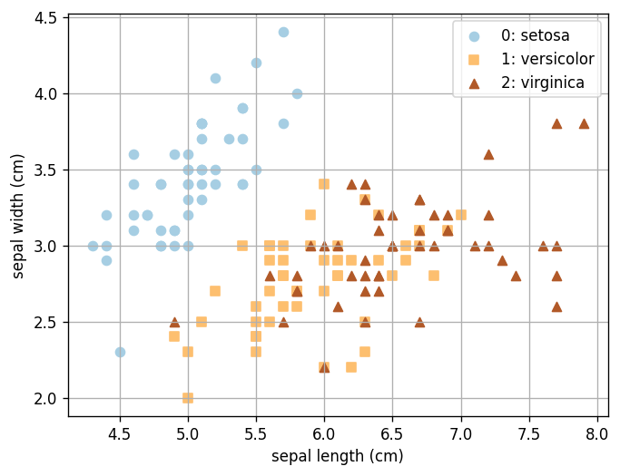
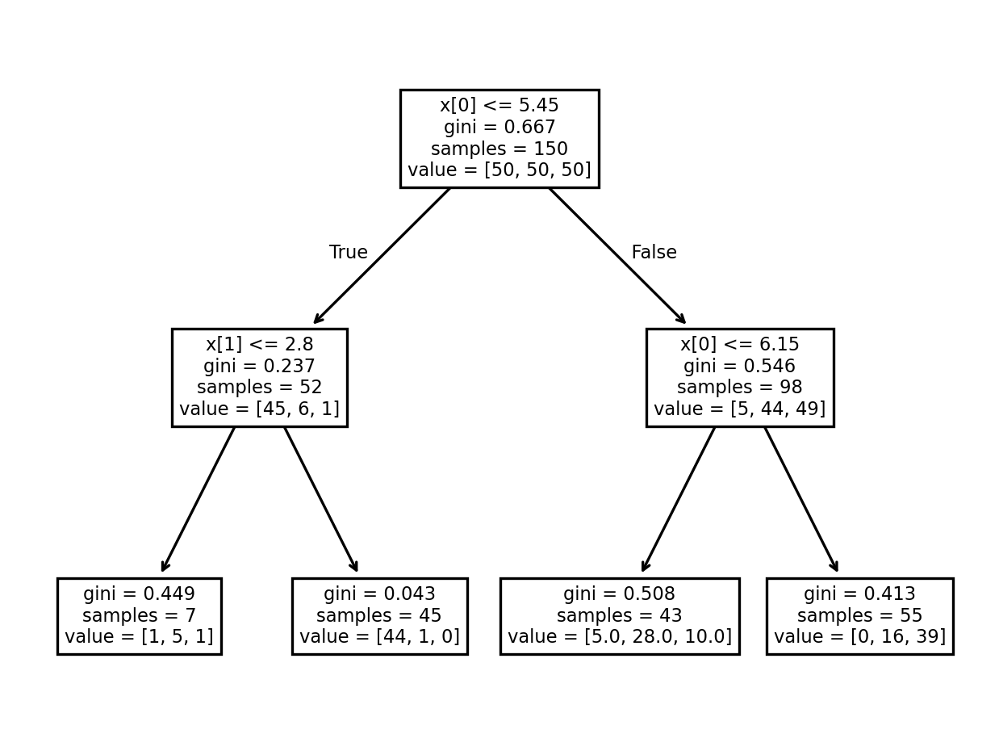
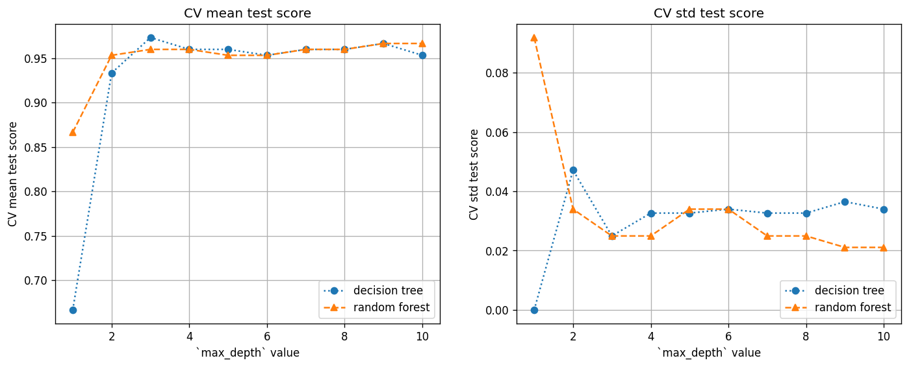
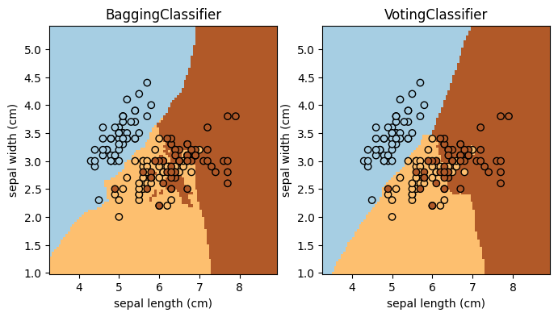

Lab 15: Classification II: Decision Trees and Ensemble Methods#
For the class on Wednesday, March 27th
A. Decision Trees and Random Forests#
In this example, we still use the Iris data set. Like in Lab 14, because we are using the data set only as a demonstration, we will use all data as training data. Remember that this is not a good practice when you have a real problem to tackle!
import numpy as np
import matplotlib.pyplot as plt
from sklearn import datasets
from sklearn.tree import DecisionTreeClassifier, plot_tree
from sklearn.ensemble import RandomForestClassifier
from sklearn.model_selection import GridSearchCV
# Load and plot the iris data
iris = datasets.load_iris()
X = iris.data
Y = iris.target
fig, ax = plt.subplots(dpi=120)
n_classes = len(iris.target_names)
for i in range(n_classes):
ax.scatter(X[Y==i, 0], X[Y==i, 1], color=plt.cm.Paired(i/(n_classes-1)), marker="os^"[i], label=f"{i}: {iris.target_names[i]}")
ax.legend(loc="upper right")
ax.grid(True)
ax.set_xlabel(iris.feature_names[0])
ax.set_ylabel(iris.feature_names[1]);

A1. Visualizing Trees#
Here is the code that generates the tree diagram that we looked at together in class. You can use the plot above to inspect how the decision tree works (no written response needed).
clf = DecisionTreeClassifier(max_depth=2, criterion="gini")
clf.fit(X[:,:2], Y)
fig, ax = plt.subplots(dpi=240)
plot_tree(clf, ax=ax);

A2. Use cross validation to find tree depth#
Here we use the cross validation (CV) method (as leared in Lab 13) to find the ideal tree depth for this particular data set, for both the decision tree and random forest methods.
Practically, we will use GridSearchCV
to search for the best max_depth value.
Note that the ideal tree depth would be different for different data sets, so you should always use CV to find the best tree depth.
tree_cv = GridSearchCV(DecisionTreeClassifier(), {"max_depth": np.arange(1, 11)})
tree_cv.fit(X, Y);
forest_cv = GridSearchCV(RandomForestClassifier(), {"max_depth": np.arange(1, 11)})
forest_cv.fit(X, Y);
fig, ax = plt.subplots(ncols=2, figsize=(14, 5), dpi=120)
for i, key in enumerate(["mean_test_score", "std_test_score"]):
ax[i].plot(tree_cv.cv_results_["param_max_depth"].data, tree_cv.cv_results_[key], 'o:', label="decision tree")
ax[i].plot(forest_cv.cv_results_["param_max_depth"].data, forest_cv.cv_results_[key], '^--', label="random forest")
ax[i].legend(loc="lower right")
ax[i].grid(True)
ax[i].set_xlabel("`max_depth` value")
ax[i].set_ylabel(f"CV {key.replace('_', ' ')}");
ax[i].set_title(f"CV {key.replace('_', ' ')}");

Questions (Part A):
Based on the plots above, for this particular data set, what value of
max_depthwould you choose for the decision tree and random forest methods, respectively?When
max_depth=1, the CV mean test score is still reasonably high for the random forest methods, even though there is only one binary split in the tree. Why do you think this is the case?
Write your answers to Part A here
B. Ensemble Methods#
This example shows how to use an ensemble method with scikit-learn! Complete the task and answer the question below (the main purpose is to get you familiar with scikit-learn API for ensemble methods).
🚀 Tasks: Add two more ensemble classifiers to the code (add to the classifiers list; keep the existing two). The specifications of the two classifiers are:
Adaptive boosting (
AdaBoostClassifier) with the Support Vector Machine Classifier (SVC) as the base estimator.Stacking method (
StackingClassifier) with the Logistic Regression (LogisticRegression), Quadratic Discriminant Analysis (QuadraticDiscriminantAnalysis), and Random Forest (RandomForestClassifier; use the depth you found in Part A) as the three base estimators.
from sklearn.ensemble import StackingClassifier, BaggingClassifier, AdaBoostClassifier, VotingClassifier
from sklearn.naive_bayes import GaussianNB
from sklearn.neighbors import KNeighborsClassifier
from sklearn.gaussian_process import GaussianProcessClassifier
from sklearn.tree import DecisionTreeClassifier
from sklearn.svm import SVC
from sklearn.discriminant_analysis import QuadraticDiscriminantAnalysis
from sklearn.linear_model import LogisticRegression
from sklearn.inspection import DecisionBoundaryDisplay
classifiers = [
BaggingClassifier(KNeighborsClassifier(3), random_state=42),
VotingClassifier([
("nb", GaussianNB()),
("gp", GaussianProcessClassifier(random_state=42)),
("knn", KNeighborsClassifier(3)),
("tree", DecisionTreeClassifier(max_depth=5)),
]),
# TODO: add your code here
]
fig, ax = plt.subplots(1, len(classifiers), figsize=(4*len(classifiers),4))
for i, clf in enumerate(classifiers):
clf.fit(X[:,:2], Y)
DecisionBoundaryDisplay.from_estimator(
clf,
X[:,:2],
cmap=plt.cm.Paired,
ax=ax[i],
response_method="predict",
plot_method="pcolormesh",
shading="auto",
xlabel=iris.feature_names[0],
ylabel=iris.feature_names[1],
)
ax[i].scatter(X[:, 0], X[:, 1], c=Y, edgecolors="k", cmap=plt.cm.Paired)
ax[i].set_title(clf.__class__.__name__)

Questions (Part B):
Which of these four methods (the two existing and the two you added) seems to work the best for this particular data set? Explain your reasoning in a few sentences.
Consider the “best” ensemble method you identified from Q1. Would you worry that the method overfits the data? Why or why not? And how would you check and address this concern?
// Write your answers to Part B here
Tip
Submit your notebook
Follow these steps when you complete this lab and are ready to submit your work to Canvas:
Check that all your text answers, plots, and code are all properly displayed in this notebook.
Run the cell below.
Download the resulting HTML file
15.htmland then upload it to the corresponding assignment on Canvas.
!jupyter nbconvert --to html --embed-images 15.ipynb